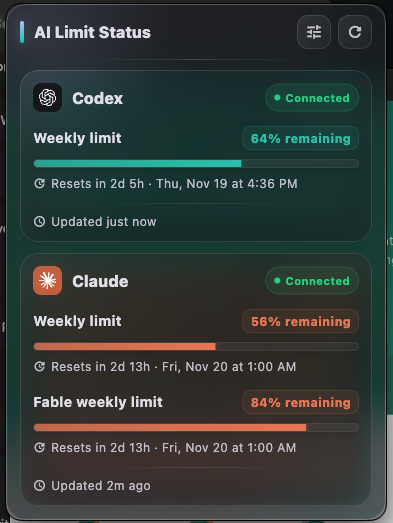

DESKTOP · COMMUNITY PROJECT
AI Limit Status
Your AI usage, a glance away. A Flutter desktop companion that brings Codex and Claude usage limits to the macOS menu bar and Windows taskbar.
How I built it
ProblemCodex and Claude limits lived in separate tools, so checking what was left meant opening a browser or a terminal in the middle of work.
My contributionI built the Flutter app, its provider readers and warnings, the native macOS menu bar (Swift) and Windows taskbar integrations, and the release pipeline: GitHub Actions builds the DMG and Windows installer, Homebrew installs it, and the app updates itself in one click.
Decision and resultExpired Claude tokens made the app wrongly ask people to sign in again. I traced it to keychain-held credentials, let Claude Code refresh its own token, and read the keychain without a password prompt. Version 1.0 ships that fix with one-click updates, update alerts and a product website.
Independent community project · v1.0 · macOS and Windows
